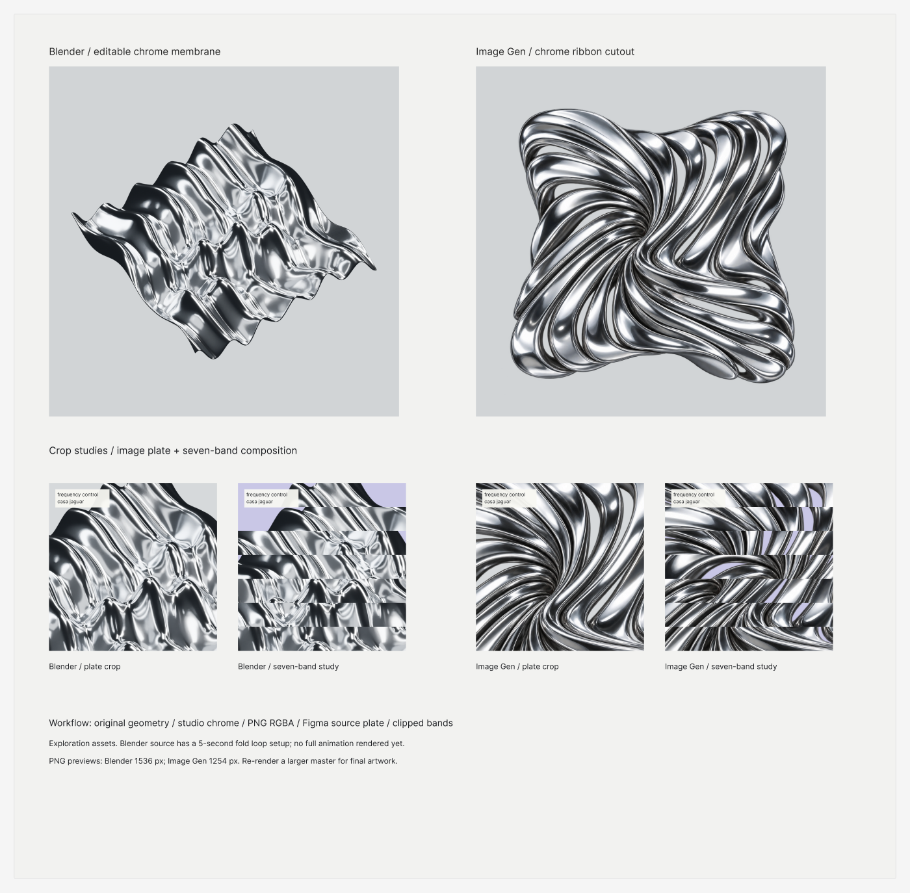

Art direction · Music
Jogo Bonito · EP artwork
A modular cover language built from a seven-band grid, liquid forms and shifts in colour.

For Frequency Control, I explored how a series of covers could feel related while giving each composition its own character. A seven-band grid held the typography and composition together. Colour, crops and liquid forms gave me room to vary the artwork. A separate material study explored reflective chrome with Blender and Figma composition.

